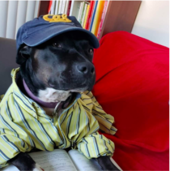
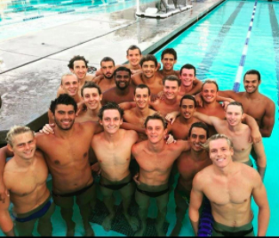
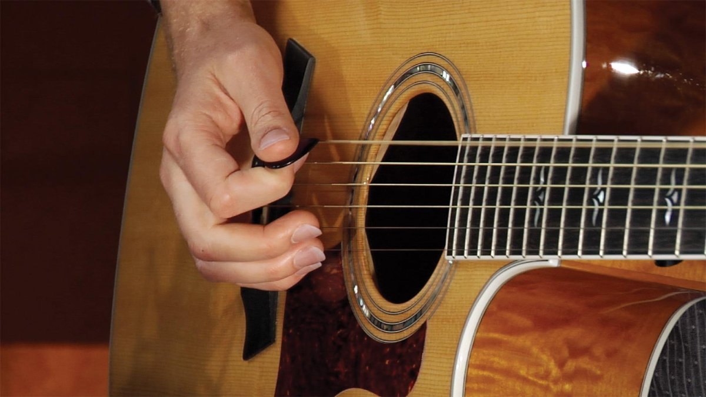

I've been thinking recently that I've had a lot of crazy experiences in my short quarter-century (ish) on Earth. They come in many different categories. Some are funny, some are serious, some are inspiring, and some are a little depressing. Here they are:
Growing up
My parents divorced when I was 3. They had wildly different worldviews, so it's crazy that they were ever together long enough to have 4 children (I am the youngest of those). When I was 5, my mom had another child with someone else. These days that child is in college, which makes me feel uncomfortably old. Anyways, because they had split custody over us and lived in the same neighborhood, I would alternate nights at my mom's house and dad's house. As a result, my upbringing was incredibly inconsistent and in high school I had to compartmentalize in order to please everyone. Everyone except, as it turns out, myself. I was never asked what it is I wanted, but everyone still had high expectations of me. It took me almost my whole adult life so far to figure out what I really want out of life.
School & Work
I grew up in a Chicago suburban neighborhood where movies like The Breakfast Club and Mean Girls are based. The high school I went to was incredibly competitive. I was one of maybe five students out of 1200 in my class that didn't go directly to some prestigious, brand name school. Instead, for financial reasons I went to Community College. I knew I wanted to play water polo and I had a coach who really believed in me. So she helped me develop a plan in which I would move to Southern California, establish California residency, and get in-state tuition while knocking out my general education at CC and playing water polo.
Well, it worked. I got in-state tuition. I transferred to Berkeley. I decided to study physics. And in the process I became obsessed with it. You wouldn't guess based on my appearance, but I'm actually the world's bigget physics nerd. A friend once told me while we were working on a physics lab: "Graham, out of all the people who study physics at Berkeley, I think you're the most interested in physics." He was right.
But I got a little burnt out of physics when I discovered I wasn't interested enough in the research I was doing. So I took some time to introspect and remembered that I really care about the environment. The multitude of camping trips I took as a kid always reminded me that I love nature more than anything. So I gained a renewed focus on climate change. I took some non-physics electives including really interesting/scary ones like Climate Change Mitigation and Climate Change Economics and Environmental Engineering. They were really interesting, but because I had been forged in the crucible of Berkeley physics, they were some of the easiest classes I took. But damn, were they informative.
I graduated less than 2 weeks before the first coronavirus cases were reported in Wuhan, China. Talk about luck! Or not, since I entered a job market which was about to totally crash. I started with an internship doing data analytics with a solar microgrid company. They couldn't keep me due to pre-COVID financial constraints, and then when COVID hit I felt like I was pretty screwed, since lots of entry-level jobs were being sucked up by recently laid-off PhDs. I was incredibly lucky to find a job teaching at ARISE High School. It's a job I knew I would love since teaching had always been so enjoyable. It just so happened that my first real, full-time job would involve trying to teach kids engineering without being able to do any labs. Let's just say that while it's been a challenge so far, it's certainly been a fun and rewarding one.
Sports
I played baseball for 8 years. As a timid kid, I was never very good at hitting, but man could I catch and throw. I also played basketball and football for a few years, but never excelled at those either. It wasn't until my high school growth spurt that I became a halfway decent athlete. I started swimming and loved it. Then I started playing water polo and decided that was the one and only game I ever wanted to play for the rest of my life. I was the goalie on my high school team. And let me just say that I've never felt like more of a badass than when I would block a wide-open shot and save the game. I could say so much more about this, but honestly it would deserve its own website.
Music
My mother is a professional musician. She plays violin for the Chicago Symphony Orchestra and has done for the past 30 years. So I frequently went to her concerts and was educated in the very bougie ways of classical music. I played the piano for 12 years and joined the middle school band as a french horn player. I excelled at that and joined a local youth Symphony in high school. During the first rehearsal there, we ran through the music we would be playing in concert in a few months. At first I didn't recognize the first few bars of Rimsky-Korsakov's Scheherexade, but when the first violin solo came up I immediately flashed back to the many nights when I lied awake listening to my mother practice the same beautiful solo for an audition. I was overcome with indescribable emotion in that moment and I decided I wanted to be a professional musician.

Fast forward several years past the many groups I played in, from small ensembles in high school to three college orchestras, including the UC Berkeley Symphony Orchestra, and I eventually decided that I didn't want to depend on my musical craft for an income. I realized that the stress of having to proide for myself and perhaps a family while making money in a dying profession wasn't the best path, and I thought it would lead to my getting sick of music altogether. So I stopped playing in large groups. Now, I just play my guitar and I've gotten pretty good. Sometimes I still pick up the french horn and noodle around and play some solos I had learned in years past, just to know that I can still make beautiful music and give myself that goosebumpy feeling that comes when you channel the heart and soul of a great musician. 